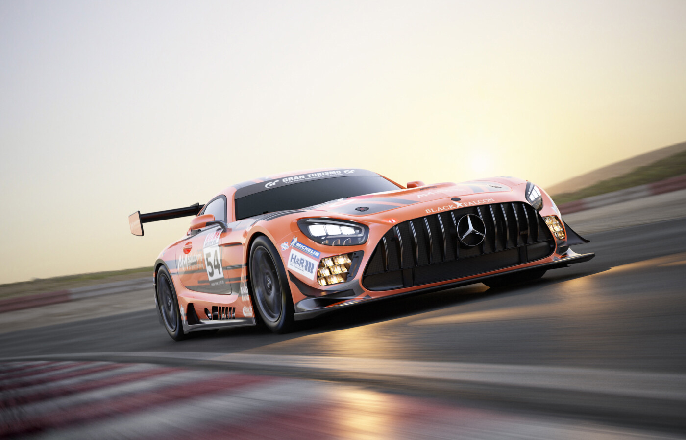
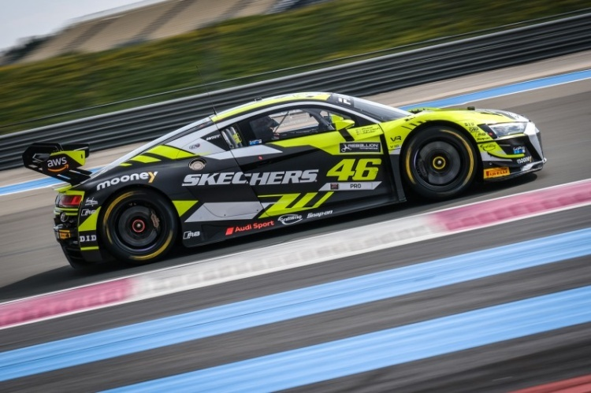

1° Mercedes-AMG GT3 EVO🥇
for more information, click on the image
The Mercedes-AMG GT3 Evo was introduced to iRacing as part of the 2022 Season 3 update, expanding the platform’s GT3 lineup to a total of nine cars.
This vehicle features a naturally aspirated 6.2-liter V8 engine producing 550 horsepower, positioned in front of the cockpit. This front-engine setup results in a lighter rear, requiring careful handling and balance management.
Like the other cars in the GT3 class—against which it competes under Balance of Performance regulations—the Mercedes-AMG GT3 Evo is rear-wheel drive. It is equipped with a 6-speed sequential gearbox, as well as traction control and ABS systems.
The car is not available for rookie races; drivers must first attain at least a D or C license to be eligible to race it.
2° Porsche 911 GT3 R🥈

for more information, click on the image
The Porsche 911 GT3 R was a highlight of the GT World Challenge Europe 2023, reflecting Porsche’s racing heritage and advanced engineering. Based on the iconic 911 and built to FIA GT3 standards, the car features a classic rear-engine, rear-wheel-drive setup that rewards skilled drivers.
It is powered by a naturally aspirated 4.2-liter flat-six engine producing around 565 hp, with a six-speed sequential gearbox and advanced adjustable traction control and ABS. The chassis is finely tuned to improve balance and handling, countering the unique dynamics of the rear-engine layout.
In the 2023 season, the 911 GT3 R was raced by top teams like Manthey EMA and Dinamic GT, competing on legendary European tracks such as Spa-Francorchamps, Monza, and Nürburgring. Its consistent performance and reliability reinforced Porsche’s dominance in the world of GT3 racing.
3° Audi R8 LMS GT3 EVO II🥉
for more information, click on the image
The Audi R8 LMS GT3 EVO II was one of the highlights of the GT World Challenge Europe 2023, showcasing Audi’s strong tradition in GT racing. This upgraded version brought improvements in aerodynamics, handling, and tire management, while fully complying with FIA GT3 category regulations. Based on the production Audi R8, the car was extensively adapted for track performance.
The model is powered by a naturally aspirated 5.2-liter V10 engine, delivering around 565 horsepower, paired with a six-speed sequential transmission and rear-wheel drive. It also features adjustable traction control and ABS. The EVO II version stands out for its refined aerodynamic balance and optimized suspension, helping to better manage tire wear in endurance races.
During the 2023 season, the Audi R8 LMS GT3 EVO II was fielded by top-tier teams such as Team WRT and Tresor Attempto Racing, competing at prestigious tracks like Spa-Francorchamps, Monza, and Barcelona. Its combination of mechanical reliability, strong performance, and the expertise of experienced teams reinforced Audi’s presence as a competitive force in the European GT3 scene.